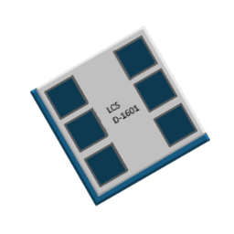
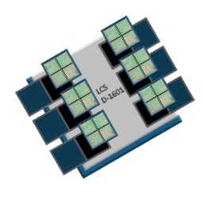
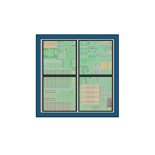

Bem-vindo ao nosso site!
Aqui você ficará por dentro dos lançamentos, novidades e novas tecnologias do
fabricante de processadores LCS.


D-1601
Um novo modelo de processadores da LCS finalmente foi lançado. agora suportando até 6 Neocores*, mais rápido, usando soquete DS256 e consumindo menos calor.
Saiba mais

*Neocore
Neocore é uma nova tecnologia desenvolvido pela LCS com intuito de substituir os núcleos tradicionais dos processadores para um que possibilita a recolocação dos núcleos sem precisar trocar de processador.
Sobre a LCS
A LCS é uma fabricante de processadores fundada em 2018 por Lucas Carvalho Sobreiro com intuito de revolucionar o mercado dos processadores com as novas tecnologias. A empresa se originou no Brasil e foi se espalhando em outros países, ganhando mais popularidade no mundo todo com suas inovações.
Contato
Nome
Mensagem